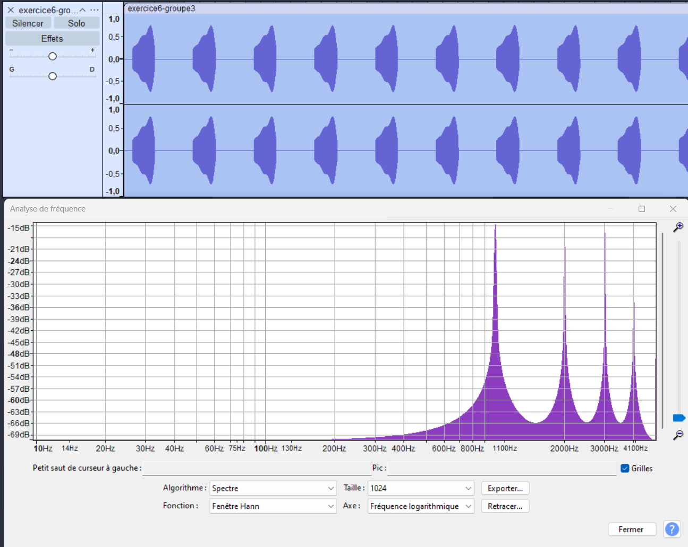

Synthèse Numérique Audio
Traitement du Signal, Filtrage & Temps Réel
L'Objectif
Conception et implémentation d'un système de synthèse sonore numérique en temps réel, similaire aux synthétiseurs musicaux (type Yamaha DX7). Le projet vise à générer des signaux audio complexes (somme de sinusoïdes, bruit) et à leur appliquer des traitements avancés tels que le filtrage numérique (FIR), la modulation de fréquence (FM) et d'amplitude (AM). L'ensemble est exécuté sur une cible embarquée (Raspberry Pi 4B) avec des contraintes temporelles strictes (période d'échantillonnage de 100 µs).
Traitement du Signal (DSP)
Mise en œuvre d'algorithmes mathématiques pour la génération de sons (synthèse additive) et le filtrage. Conception de filtres passe-bande à Réponse Impulsionnelle Finie (FIR) avec calcul des coefficients et application de fenêtres de pondération (Blackman-Harris) pour optimiser la sélectivité spectrale.
Temps Réel & Embarqué
Développement en langage C sur une architecture Linux étendue avec le co-noyau Xenomai pour garantir le déterminisme. Le système doit calculer chaque échantillon en moins de 100 µs pour assurer une fréquence d'échantillonnage stable de 10 kHz, indispensable pour la fidélité audio.
Modulation FM / AM
Implémentation de techniques de modulation pour enrichir le spectre sonore. La modulation de fréquence (FM) crée des harmoniques complexes, tandis que la modulation d'amplitude (AM) permet de sculpter l'enveloppe du son. Ces effets sont validés par analyse spectrale.
Compétences Mobilisées
Compétences BUT (Niv. 2)
Concevoir
Modélisation mathématique et synthèse de filtres
Vérifier
Analyse spectrale (FFT) et validation des signaux
Stack Technique
🛠️ Signal & Informatique
Langage C (Pointeurs, Structures)
Raspberry Pi 4B (Linux/Xenomai)
Analyse Spectrale (Audacity, Mathcad)
Bus SPI (DAC 16 bits)
🤝 Transversales
Rigueur mathématique
Optimisation de code
Analyse de données complexes
Architecture du Système
Raspberry Pi 4B
Cœur numérique du système exécutant l'OS Linux et le programme de synthèse audio en temps réel.
Carte HAT (DAC SPI)
Carte d'extension spécifique intégrant un convertisseur Numérique/Analogique 16 bits piloté par SPI pour la sortie audio.
Algorithme C
Implémentation logicielle des générateurs (Bruit, Sinus), des modulateurs et des filtres numériques (Convolution FIR).
Validation (FFT)
Utilisation d'outils d'analyse (Mathcad, Audacity) pour vérifier la conformité spectrale des signaux générés.
Mon Ressenti
Ce que j'ai aimé
- La poésie du traitement du signal : transformer des nombres en sons
- Le défi mathématique : implémenter des algorithmes DSP en temps réel
- L'aspect interdisciplinaire : électronique, DSP et théorie du signal
- Le moment magique où les premiers sons purs ont émergé du chaos
Ce que j'ai découvert
- Le traitement du signal numérique en profondeur (FFT, convolution, filtres)
- Les contraintes du temps réel sur un Raspberry Pi avec Linux
- L'analyse spectrale et les outils de diagnostic audio (Audacity, Mathcad)
- La théorie des oscillateurs numériques et des modulateurs
Ce que j'ai amélioré
- Ma compréhension des algorithmes DSP et de leur implémentation
- Ma capacité à déboguer du code temps réel et en bas niveau
- Mon intuition mathématique sur les phénomènes ondulatoires
- Ma patience face à des résultats subtils et des ajustements mineurs
Ce projet m'a appris que derrière chaque son qu'on entend se cache une danse mathématique complexe. Le DSP, c'est la magie de transformer l'abstrait numérique en émotion sonore. Une belle leçon sur la puissance de la programmation bas niveau ! 🎵
Résultats : Analyse Spectrale
Exemple de spectre d'un signal modulé en fréquence (FM), montrant la richesse harmonique générée par le système.
